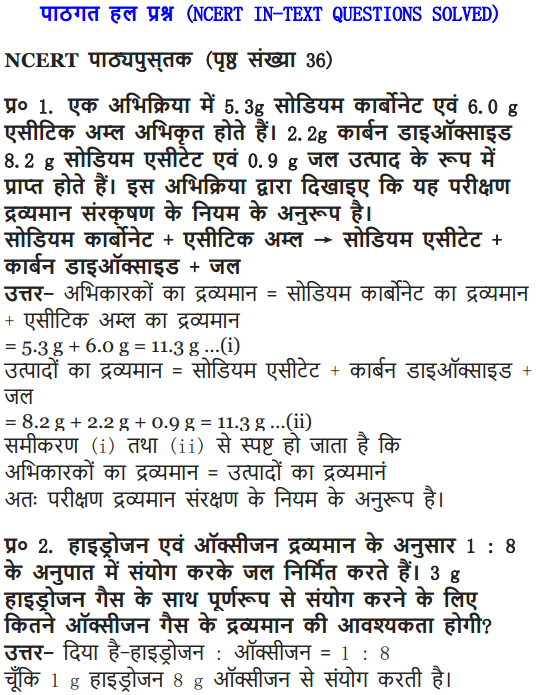

NCERT Solutions Class 9 Science Chapter 3 Atoms and Molecules – Here are all the NCERT solutions for Class 9 Science Chapter 3. This solution contains questions, answers, images, step by step explanations of the complete Chapter 3 titled Atoms and Molecules of Science taught in class 9. If you are a student of class 9 who is using NCERT Textbook to study Science, then you must come across Chapter 3 Atoms and Molecules. After you have studied lesson, you must be looking for answers of its questions. Here you can get complete NCERT Solutions for Class 9 Science Chapter 3 Atoms and Molecules in one place. For a better understanding of this chapter, you should also see Chapter 3 Atoms and Molecules Class 9 notes , Science.
NCERT Solutions For Class 9 Science Chapter 3 Atoms and Molecules
Topics and Sub Topics in Class 9 Science Chapter 3 Atoms and Molecules:
- Atoms and Molecules
- Laws of Chemical Combination
- What is an Atom?
- What is a Molecule?
- Writing Chemical Formulae
- Molecular Mass and Mole Concept
These solutions are part of NCERT Solutions for Class 9 Science. Here we have given Class 9 NCERT Science Text book Solutions for Chapter 1 matter in our Surroundings.
IN-TEXT QUESTIONS SOLVED
NCERT Textbook for Class 9 Science – Page 32
Question 1. In a reaction 5.3 g of sodium carbonate reacted with 6 g of ethanoic acid. The products were 2.2 g of carbon dioxide, 0.9 g water and 8.2 g of sodium ethanoate. Show that these observations are in agreement with the law of conservation of mass carbonate.
Answer.


More Resources for CBSE Class 9
- NCERT Solutions
- NCERT Solutions Class 9 Maths
- NCERT Solutions Class 9 Social Science
- NCERT Solutions Class 9 English
- NCERT Solutions Class 9 Hindi
- NCERT Solutions Class 9 Sanskrit
- NCERT Solutions Class 9 IT
- RD Sharma Class 9 Solutions
CBSE Class 9 Science Chapter 3 IN-TEXT QUESTIONS SOLVED
Class 9 Science NCERT Textbook Page 32
Question 1. In a reaction 5.3 g of sodium carbonate reacted with 6 g of ethanoic acid. The products were 2.2 g of carbon dioxide, 0.9 g water and 8.2 g of sodium etkanoate. Show that these observations are in agreement with the law of conservation of mass carbonate.
Answer:

Question 2. Hydrogen and oxygen combine in the ratio of 1 : 8 by mass to form water. What mass of oxygen gas would be required to react completely with 3 g of hydrogen gas?
Answer: Ratio of H : O by mass in water is:
Hydrogen : Oxygen —> H2O
∴ 1 : 8 = 3 : x
x = 8 x 3
x = 24 g
∴ 24 g of oxygen gas would be required to react completely with 3 g of hydrogen gas.
Formulae Handbook for Class 9 Maths and ScienceEducational Loans in India
Question 3. Which postulate of Dalton’s atomic theory is the result of the law of conservation of mass?
Answer: The postulate of Dalton’s atomic theory that is the result of the law of conservation of mass is—the relative number and kinds of atoms are constant in a given compound. Atoms cannot be created nor destroyed in a chemical reaction.
Question 4. Which postulate of Dalton’s atomic theory can explain the law of definite proportions?
Answer: The relative number and kinds of atoms are constant in a given compound.
Class 9 Science NCERT Textbook Page 35
Question 1. Define the atomic mass unit.
Answer: One atomic mass unit is equal to exactly one-twelfth (1/12th) the mass of one atom of carbon-12. The relative atomic masses of all elements have been found with respect to an atom of carbon-12.
Question 2. Why is it not possible to see an atom with naked eyes?
Answer: Atom is too small to be seen with naked eyes. It is measured in nanometres.
1 m = 109 nm
NCERT Textbook Questions – Page 39
Question 1. Write down the formulae of
(i) Sodium oxide
(ii) Aluminium chloride
(iii) Sodium sulphide
(iv) Magnesium hydroxide
Answer: The formulae are
Question 2. What is meant by the term chemical formula?
Answer: The chemical formula of the compound is a symbolic representation of its composition, e.g., chemical formula of sodium chloride is NaCl.
Question 3. How many atoms are present in a
(i) H2S molecule and
(ii) P043- ion?
Answer: (i) H2S —> 3 atoms are present
(ii) P043- —> 5 atoms are present
NCERT Textbook Questions – Page 40
Question 1. Calculate the molecular masses of H2, O2, Cl2, C02, CH4, C2H2,NH3, CH3OH.
Answer: The molecular masses are:
Question 2.Calculate the formula unit masses of ZnO, Na2O, K2C03, given atomic masses of Zn = 65 u, Na = 23 u, K = 39 u, C = 12 u, and O = 16 u.
Answer: The formula unit mass of
(i) ZnO = 65 u + 16 u = 81 u
(ii) Na2O = (23 u x 2) + 16 u = 46 u + 16 u = 62 u
(iii) K2C03 = (39 u x 2) + 12 u + 16 u x 3
= 78 u + 12 u + 48 u = 138 u
Class 9 Science NCERT Textbook Page 42
Question 1. If one mole of carbon atoms weigh 12 grams, what is the mass (in grams) of 1 atom of carbon?
Answer:
Question 2. Which has more number of atoms, 100 grams of sodium or 100 grams of iron (given atomic mass of Na = 23 u, Fe = 56 u)?
Answer:
Questions From NCERT Textbook for Class 9 Science
Question 1. A 0.24 g sample of compound of oxygen and boron was found by analysis to contain 0.096 g of boron and 0.144 g of oxygen. Calculate the percentage composition of the compound by weight.
Answer: Boron and oxygen compound —> Boron + Oxygen
0.24 g —> 0.096 g + 0.144 g
Question 2. When 3.0 g of carbon is burnt in 8.00 g oxygen, 11.00 g of carbon dioxide is produced. What mass of carbon dioxide will be formed when 3.00 g of carbon is burnt in 50.00 g of oxygen? Which law of chemical combination will govern your answer?
Answer: The reaction of burning of carbon in oxygen may be written as:
It shows that 12 g of carbon bums in 32 g oxygen to form 44 g of carbon dioxide. Therefore 3 g of carbon reacts with 8 g of oxygen to form 11 g of carbon dioxide. It is given that 3.0 g of carbon is burnt with 8 g of oxygen to produce 11.0 g of CO2. Consequently 11.0 g of carbon dioxide will be formed when 3.0 g of C is burnt in 50 g of oxygen consuming 8 g of oxygen, leaving behind 50 – 8 = 42 g of O2. The answer governs the law of constant proportion.
Question 3. What are poly atomic ions? Give examples.
Answer: The ions which contain more than one atoms (same kind or may be of different kind) and behave as a single unit are called polyatomic ions e.g., OH–, SO42-, CO32-.
Question 4. Write the chemical formulae of the following:
(a) Magnesium chloride
(b) Calcium oxide
(c) Copper nitrate
(d) Aluminium chloride
(e) Calcium carbonate.
Answer: (a) Magnesium chloride
Symbol —> Mg Cl
Change —> +2 -1
Formula —> MgCl2
(b) Calcium oxide
Symbol —> Ca O
Charge —> +2 -2
Formula —> CaO
(c) Copper nitrate
Symbol —> Cu NO
Change +2 -1
Formula -4 CU(N03)2
(d) Aluminium chloride
Symbol —> Al Cl
Change —> +3 -1
Formula —> AlCl3
(d) Calcium carbonate
Symbol —> Ca CO3
Change —> +2 -2
Formula —> CaC03
Question 5. Give the names of the elements present in the following compounds:
(a) Quick lime
(b) Hydrogen bromide
(c) Baking powder
(d) Potassium sulphate.
Answer: (a) Quick lime —> Calcium oxide
Elements —> Calcium and oxygen
(b) Hydrogen bromide
Elements —> Hydrogen and bromine
(c) Baking powder —> Sodium hydrogen carbonate
Elements —> Sodium, hydrogen, carbon and oxygen
(d) Potassium sulphate
Elements —> Potassium, sulphur and oxygen
Question 6. Calculate the molar mass of the following substances.
(a) Ethyne, C2H2
(b) Sulphur molecule, S8
(c) Phosphorus molecule, P4 (Atomic mass of phosphorus = 31)
(d) Hydrochloric acid, HCl
(e) Nitric acid, HNO3
Answer: The molar mass of the following: [Unit is ‘g’]
(a) Ethyne, C2H2 = 2 x 12 + 2 x 1 = 24 + 2 = 26 g
(b) Sulphur molecule, S8 = 8 x 32 = 256 g
(c) Phosphorus molecule, P4=4 x 31 = i24g
(d) Hydrochloric acid, HCl = 1 x 1 + 1 x 35.5 = 1 + 35.5 = 36.5 g
(e) Nitric acid, HN03 = 1 x 1 + 1 x 14 + 3 x 16 = 1 + 14 + 48 = 63 g
Question 7. What is the mass of
(a) 1 mole of nitrogen atoms?
(b) 4 moles of aluminium atoms (Atomic mass of aluminium = 27)?
(c) 10 moles of sodium sulphite (Na2S03)?
Answer: (a) Mass of 1 mole of nitrogen atoms = 14 g
(b) 4 moles of aluminium atoms
Mass of 1 mole of aluminium atoms = 27 g
∴ Mass of 4 moles of aluminium atoms = 27 x 4 = 108 g
(c) 10 moles of sodium sulphite (Na2SO3)
Mass of 1 mole of Na2SO3 = 2 x 23 + 32 + 3 x 16 = 46 + 32 + 48 = 126 g
∴ Mass of 10 moles of Na2SO3 = 126 x 10 = 1260 g
Question 8. Convert into mole.
(a) 12 g of oxygen gas
(b) 20 g of water
(c) 22 g of Carbon dioxide.
Answer: (a) Given mass of oxygen gas = 12 g
Molar mass of oxygen gas (O2) = 32 g
Mole of oxygen gas 12/32 = 0.375 mole
(b) Given mass of water = 20 g
Molar mass of water (H2O) = (2 x 1) + 16 = 18 g
Mole of water = 20/18 = 1.12 mole
(c) Given mass of Carbon dioxide = 22 g
Molar mass of carbon dioxide (CO2) = (1 x 12) + (2 x 16)
= 12 + 32 = 44 g
∴ Mole of carbon dioxide = 22/44 = 0.5 mole
Question 9. What is the mass of:
(a) 0.2 mole of oxygen atoms?
(b) 0.5 mole of water molecules?
Answer: (a) Mole of Oxygen atoms = 0.2 mole
Molar mass of oxygen atoms = 16 g
Mass of oxygen atoms = 16 x 0.2 = 3.2 g
(b) Mole of water molecule = 0.5 mole
Molar mass of water molecules = 2 x 1 + 16= 18 g .
Mass of H2O = 18 x 0.5 = 9 g
Question 10. Calculate the number of molecules of sulphur (S8) present in 16 g of solid sulphur.
Answer: Molar mass of S8 sulphur = 256 g = 6.022 x 1023 molecule
Given mass of sulphur = 16 g

Question 11. Calculate the number of aluminium ions present in 0.051 g of aluminium oxide. (Hint: The mass of an ion is the same as that of an atom of the same element. Atomic mass of Al = 27 u)
Answer: Molar mass of aluminium oxide Al203
= (2 x 27) + (3 x 16)
= 54 + 48 = 102 g.

NCERT Solutions for Class 9 Science Chapter 3 Atoms and Molecules (Hindi Medium)

MORE QUESTIONS SOLVED
NCERT Solutions For Class 9 Science Chapter 3 Multiple Choice Questions
Choose the correct option:
1. The atomicity of K2Cr2O7 is
(a) 9 (b) 11
(c) 10 (d) 12
2. The formula for quick lime is
(a) CaCl2 (b) CaCO3
(c) Ca(OH)2 (d) CaO
3. The symbol of cadmium is
(a) Ca (b) Cu
(c) Cm (d)Cd
4. All noble gas molecules are
(a) monoatomic
(c) triatomic
5. The valency of nitrogen in NH3 is
(a) 1 (b)3
(c) 4 (d) 5
6. The formula of ethanol is C2H5—OH. Its molecular mass is
(a) 46 u (b) 34 u
(c) 34 g (d) 46 g
7. How many moles are present in 28 g of nitrogen atoms?
(a) 1 mole (b) 2.3 moles
(c) 0.5 mole (d) 2 moles
8. The molecular mass of x is 106. x among the following is
(a) CaC03 (b) S03
(c) Na2C03 (d) NaCl
9. Which among the following is not a postulate of Dalton’s atomic theory?
(a) Atoms cannot be created or destroyed.
(b) Atoms of different elements have different sizes, masses and chemical properties.
(c) Atoms of same elements can combine in only one ratio to produce more than one compound.
(d) Atoms are very tiny particles which cannot be divided further.
10. Pick up the wrong pairs/combination
(a) 6.022 x 1023 molecules of oxygen = 32 g of oxygen
(b) 6.022 x 1023 ions of sodium = 23 g of Na
(c) 6.022 x 1023 atoms of C = 24 g of carbon
(d) 6.022 x 1023 atoms of H = 1 g of H atoms
Answer. 1—(b), 2—(d), 3—(d), 4—(a), 5—(b), 6-(a), 7—(d), 8—(c), 9—(c), 10—(c).
NCERT Solutions For Class 9 Science Chapter 3 Very Short Answer Questions
Question 1. Define law of conservation of mass.
Answer: In a chemical reaction mass can neither be created nor destroyed.
E.g., 2Na + Cl2 ——–> 2NaCl
2 x 23 + 2 x 35.5 ——> 2(23 + 35.5)
Question 2. Explain law of constant proportion.
Answer: In a chemical substance the elements are always present in definite proportions by mass.
E.g., In water, the ratio of the mass of hydrogen to the mass of oxygen H : O is always 1:8
Question 3. Who coined the term atom?
Answer: John Dalton coined the term atom.
Question 4. Define atom.
Answer: The smallest particle of matter, which can take part in a chemical reaction is called atom.
Question 5. Define molecule.
Answer: The smallest particle of an element or compound which can exist independently is called molecule.
Question 6. Define atomicity.
Answer: The number of atoms constituting a molecule is known as its atomicity.
Question 7. What is atomic mass unit?
Answer: The sum of the atomic masses of all the atoms in a molecule of the substance is expressed.in atomic mass unit. E.g., H20 = 1 x 2 + 16 = 18 amu
Question 8. How do atoms exist?
Answer: Atoms exist in the form of atom, molecule or ions.
Question.9. Give the atomicity of phosphorous and nitrogen.
Answer. The atomicity of phosphorus is P4 i.e., 4.
The atomicity of nitrogen is N2 i.e., 2.
Question 10. What is an ion?
Answer: Charged atom is called as an ion. The ion can be positively charged called cation or negatively charged called anion.
Question 11. Give one example of cation and anion.
Answer: Cation => Na+
Anion => Cl–
Question 12. Give one difference between cation and anion.
Answer: Cations are positively charged ion.
Anions are negatively charged ion.
Question 13. Give the chemical formula for ammonium sulphate.
Answer: Ammonium sulphate
NH4+ SO42-
Chemical formula —-> (NH4)2S04.
Question 14. What is Avogadro’s constant?
Answer: The Avogadro’s constant (6.022 x 1023) is defined as the number of atoms that are present in exactly 12 g of carbon-12.
Question 15. Find the molecular mass of H20.
Answer: Molecular mass of H20
= (2 x 1) + (16)
= 2 + 16 = 18 u
NCERT Solutions For Class 9 Science Chapter 3 Short Answer Type Questions
Question 1. Give the unit to measure size of atom and give size of hydrogen atom.
Answer: The unit to measure size of atom, is nanometer, size of hydrogen atom is 10-10m.
Question 2. What is IUPAC, give its one function?
Answer: IUPAC is International Union for Pure and Applied Chemistry. It approves the names of elements.
Question 3. Give the Latin name for sodium, potassium, gold and mercury.
Answer: Sodium —> Natrium, Gold —> Aurum
Potassium —> Kalium, Mercury —> Hydrargyrum
Question 4. What is the ratio by mass of combining elements in H20, C02 and NH3?
Answer: H2O ratio by mass of combining elements 2 : 16 —>1 : 8 (H : O)
C02 ratio by mass of combining elements 12 : 32—> 3 : 08 (C : O)
NH3 ratio by mass of combining elements 14 : 3—>14 : 3 (N : H)
Question 5. Define valency and give the valency for the following elements:
Magnesium, Aluminium, Chlorine and Copper.
Answer: Valency: The combining capacity of an element is called its valency. Valency of the following elements:
Magnesium – 2
Aluminium – 3
Chlorine – 1
Copper – 2
Question 6. What is polyatomic ton? Give one example.
Answer: A group of atoms carrying a charge is known as a polyatomic ion.
E.g., Ammonium – NH4+
Nitrate – N03–
Question 7. Write down the formula for:
Copper nitrate, calcium sulphate and aluminium hydroxide.
Answer: Chemical formula:
Copper nitrate —> Cu(N03)
Calcium sulphate —> CaS04 Aluminium hydroxide Al(OH)3
Question 8. What is formula unit mass? How is it different from molecular mass?
Answer: The formula unit mass of a substance is a sum of the atomic masses of all atoms in a formula unit of a compound. The constituent particles of formula unit mass are ions and the constituent particles of molecular mass are atoms.
Question 9. Find the number of moles in the following:
(i) 50 g of H2O
(ii) 7 g of Na
Answer: Number of moles in
(i) Molar mass of H2O = 18 g
Given mass of H2O = 50 g
Question 10. Find the number of atoms in the following:
(i) 0.5 mole of C atom
(ii) 2 mole of N atom
Answer: (i) 0.5 mole of C atom:
Number of atoms in 1 mole of C atom = 6.022 x 1023 atoms
Number of atoms in 0.5 mole of C atom = 6.022 x 1023 x 0.5
= 3.011 x 1023 atoms
(ii) 2 mole of N atom:
Number of atoms in 1 mole of N atom = 6.022 x 1023 atoms
Number of atoms in 2 mole of N atom = 6.022 x 2 x 1023
= 1.2044 x 1024 atoms
Question 11. Find the mass of the following:
(i) 6.022 x 1023 number of O2 molecules
(ii) 1.5 mole of CO2 molecule
Answer: (i) 6.022 x 1023 number of 02 molecules:
Mass of 1 mole of O2 molecule = 6.022 x 1023 molecules = 32 g
(ii) 1.5 mole of CO2 molecule:
Mass of 1 mole of C02 molecule = 6.022 x 1023 molecules = 44 g
Mass of 1.5 mole C02 molecule = 44 x 1.5 = 66 g
Question 12. Show the relationship between mole, Avogadro number and mass.
Answer:


Question 13. What are the rules for writing the symbol of an element?
Answer: IUPAC —> International Union of Pure and Applied Chemistry approves name of elements.
Symbols are the first one or two letters of the element’s name in English. The first letter of a symbol is always written as a capital letter (upper case) and the second letter as a small letter (lower case).
e.g., Hydrogen —> H Helium —> He
Some symbols are taken from the names of elements in Latin, German or Greek.
e.g., Symbol of iron is Fe, its Latin name is Ferrum.
Symbol of sodium is Na, its Latin name is Natrium.
Question 14. Explain relative atomic mass and relative molecular mass.
Answer: Relative atomic mass: It can be defined as the number of times one atom of given element is heavier than 1/12 th of the mass of an atom of carbon-12. Relative Molecular Mass: It is defined as the number of times one molecule
of a substance or given element is heavier than 1/12 th of the mass of one atom of carbon-12.
Question 15. The formula of carbon-dioxide is CO2. What information do you get from this formula?
Answer: (i) CO2 represents carbon-dioxide.
(ii) CO2 is one molecule of carbon-dioxide.
(iii) CO2 is one mole of carbon-dioxide i.e., it contains 6.022 x 1023 molecules of carbon dioxide.
(iv) CO2 contains 1 atom of carbon and two atoms of oxygen.
(v) CO2 represents 44 g of molar mass.
Question.16. State 3 points of difference between an atom and an ion.
Answer.

Question 17. Calculate the formula unit mass of NaCl and CaCl2.
(Na = 23, Cl = 35.5, Ca = 40)
Answer: Formula unit mass of NaCl = 23 + 35.5
= 58.5 u
Formula unit mass of CaCl2 = 40 + (2 x 35.5)
= 40 + 71 = 111 u
Question 18. The ratio by mass for hydrogen and oxygen in water is given as 1 : 8 respectively. Calculate the ratio by number of atoms for a water molecule.
Answer: The ratio by number of atoms for a water molecule are:

Thus, the ratio by number of atoms for water is H : O = 2 : 1.
Question 19. Write down the chemical formula for the following compounds:
(a) Aluminium carbonate
(b) Calcium sulphide
(c) Zinc carbonate
(d) Copper phosphate
(e) Magnesium bicarbonate
(f) Aluminium hydroxide.
Answer: The chemical formula are:
Question 20. Give the atomicity of the following compounds:
(a) Ca(OH)2 (d) H2S04
(b) Mg(HC03)2 (e) Al2(S04)3
(c) Cu20. (f) MgCl2
Answer: The atomicity of the molecules are:
Question 21. Explain the difference between 20, 02 and 03.
Answer: 2O —> It represents 2 atoms of oxygen (cannot exist independently).
O2 —> It represents one molecule of oxygen (made up of 2 atom) can exist freely.
O3 —> It represents one molecule of ozone (made up of 3 atoms) it can exist independently.
NCERT Solutions For Class 9 Science Chapter 3 Long Answer type Questions
Question 1. (a) How do atoms exist?
(b) What is atomicity?
(c) What are polyatomic ions?
Answer: (a) Atoms of some elements are not able to exist independently. For such elements atoms form molecules and ions. In case of metals and inert gases atoms can exist independently.
(b) The number of atoms constituting a molecule is known as its atomicity.
E.g.,O3 —> atomicity is 3
O2 —> atomicity is 2
(c) Polyatomic ions: When more than two atoms combine together and act like an atom with a charge on it is called polyatomic ion.
E.g., OH–, N03–, NH4+
Question 2. Calculate
(a) the mass of one atom of oxygen
(b) the mass of one molecule of oxygen
(c) the mass of one mole of oxygen gas
(d) the mass of one ion of oxygen
(e) the number of atoms in 1 mole of oxygen molecule
Answer:

Question 3. What is meant by atomic mass, gram atomic mass of an element? Why is the mass have different expressions i.e., ‘u’ and ‘g’?
Answer: The atoms are very tiny and their individual mass cannot be calculated as it is negligible. Hence the mass of atoms is expressed in units with respect to a fixed standard. Initially hydrogen atom with mass 1 was taken as standard unit by Dalton. Later, it was replaced by oxygen atom (0=16). But due to the isotopes the masses were found in fractions instead of whole number. Hence, carbon (C=12) isotope was taken as standard unit and was universally accepted.
The atomic mass unit is equal to one twelfth (1/12) the mass of an atom of carbon-12, its unit is u.
Gramatomic mass: When the atomic mass of an element is expressed in grams, it is called the gramatomic mass of the element.
The mass of atoms, molecules is expressed in ‘u’ and the mass of moles i.e., molar mass is expressed in g.
Question 4. Define a mole. Give the significance of the mole.
Answer: Mole-One mole of any species (atoms, molecules, ions or particles) is that quantity or number having a mass equal to its atomic or molecular mass in grams.
1 mole = 6.022 x 1023 in number (atoms, molecules, ions or particles)
Significance of the mole
1. A mole gives the number of entities present i.e, 6.022 x 1023 particles of the substance.
2. Mass of 1 mole is expressed as M grams.

NCERT Solutions For Class 9 Science Chapter 3 Activity Based Questions
- Take one of the following sets X and Y of chemicals—
X – Y
(i) Copper sulphate – Sodium carbonate
(ii) Barium chloride – Sodium sulphate
(iii) Lead nitrate – Sodium chloride

- Prepare separately 95% solution of any one pair of substances listed under X and Y in water.
- Take little amount of solution of Y in a conical flask and some solution of X in an ignition tube.
- Hang the ignition tube in the flask carefully; see that the solutions do not get mixed.
- Put a cork on the flask as shown in figure.
- Weigh the flask with its contents carefully.
- Now tilt and swirl the flask, so that the solutions X and Y get mixed.
- Weigh again.
- What happens in the reaction flask?
- Do you think that a chemical reaction has taken place?
- Why should we put a cork on the mouth of the flask?
- Does the mass of the flask and its contents change?
Answer:
- In the reaction flask both the reactants combined to give new products.
- Yes.
- We should put a cork on the mouth of the flask so that no other gases in the air combine or get added into the reaction, neither any gas formed in the reaction should escape.
- No. The mass of the flask before and after reaction do not change.
NCERT Solutions For Class 9 Science Chapter 3 Value Based Questions
Question 1. A customer buys a gold jewellery, he is told that the jewellery has 90% gold and the rest copper. He is given a bill which amounts 100% charges of gold. The customer refuses to pay the bill for 100% gold but brings it to 90% gold amount and settles the bill.
(a) How many atoms of gold are present in 1 gram of gold?
(b) What is the ratio of gold and copper in the jewellery?
(c) What value of customer is reflected in the above statement?
Answer: